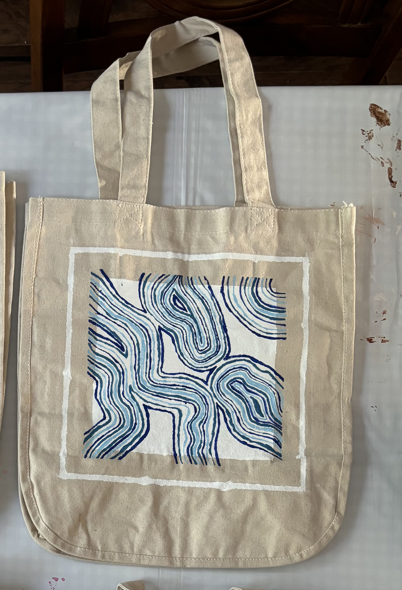
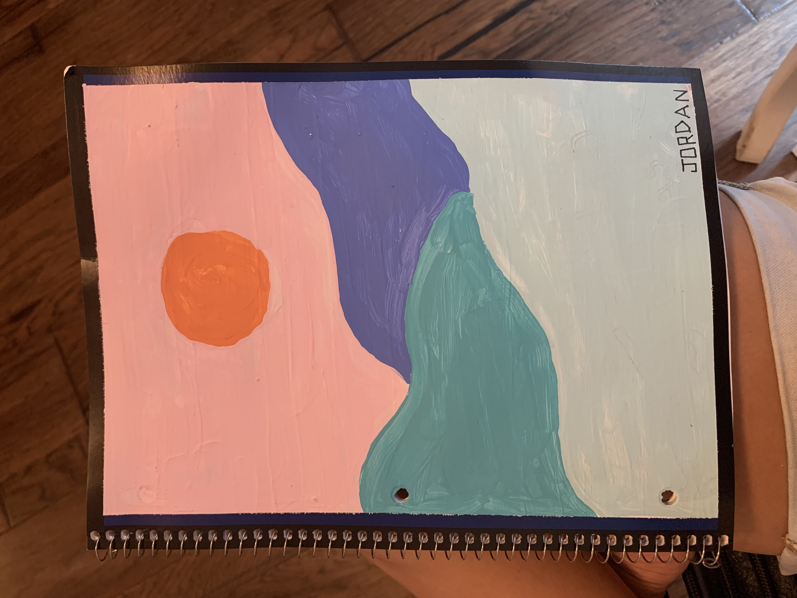

2.
2.  3.
3. 
To live my life with integrity and loyalty. To point others towards Christ in the way I conduct myself, business, and family.
Key Bible verse
Jeremiah 29:11
For I know the plans I have for you," delares the Lord, "plans to prosper you and not to harm you, plans to give you hope and a future.
This verse has been the verse I have always comeback to. When I go through an uncertain time, this verse is encouragement. It also helps me not to be anxious about my future. It is encouraging when my future career or what my personal life will look like in the next five to ten years.
My Hobbies
In my free time, I like to craft, paint, and crochet. Recently, I painted a bag,
drawing inspiration from Pinterest. I worked on it while hanging out with my
best friend. One of my most recent crochet projects is a tote bag made from
plastic bags that cannot be recycled. I enjoy repurposing materials to create
useful items for my everyday life.
Some of my other hobbies are:
 
My Family
The people in my family are my mom, my dad, and my brother, Matthew (image 1). This past summer, my family took a trip to Europe. We went to England, Ireland, and Scotland, and it was so much fun! During the trip, we visited Stonehenge (image 2), and my mom and I had afternoon tea while my dad and brother played golf (image 3).
1.
2.
3.
My Hometown
I am from the Greater Houston area in Texas. I live very close to the lake. During the summer, my family spends a lot of time on the lake. We have a boat, and in the mornings, we sometimes wake up early to go water-skiing.
Most Impactful Bible Verse
The book of the Bible that has impacted me the most is Esther. I find myself coming back to the story of Esther every so often. She was an amazing woman with great strength, an incredible amount of faith, and unwavering trust in God. Esther is one of the people in the Bible whom I strive to be like and whose faith I aspire to have.
Why ORU?
I am studying at ORU because when I was looking for schools and visiting colleges, my parents suggested ORU. I attended a Quest Day and fell in love with the campus and atmosphere.
The things I liked most about attending ORU are:
I decided to pursue a CIT degree because I want to go into
cybersecurity. My parents and I felt that this degree would be the best path to
get me there. To further support my goal, I am also minoring in criminal justice.